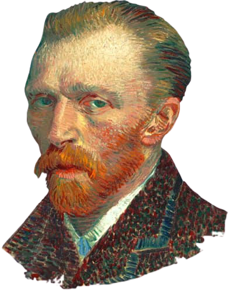

Vicent Willem van Gogh (30 de março de 1853 - 29 de julho de 1890) foi um pintor pós-impressionista holandês. Nascido numa família de classe média alta no sul da Holanda, começou a desenhar ainda criança com encorajamento da mãe e era descrito como uma pessoa séria, quieta e pensativa. Fora educado em casa pela mãe e governanta antes de ser enviado a um internato em Zevenbergen, onde se sentiu abandonado, fazendo de tudo para voltar para casa. Com 16 anos, começou a trabalhar com o tio na Galeria Goupil, uma importante empresa que comerciava obras e livros, por causa disso, viajava constantemente. Em abril de 1876, fora demitido após indispor-se com clientes. Quando fora para Ingleterra, aceitou o cargo de professor em uma escola primária de uma pequena cidade. No mesmo ano, em dezembro, fora para Etten, mas como sua relação com a família era complicada, sentiu-se acolhido apenas pelo irmão mais novo, Theo, que o compreendia e que fora o familiar que mais manteu contato em sua vida, o escrevendo cerca de seis mil cartas e rascunhos. Tornou-se depressivo e sofreu diversas crises nervosas seguidas, passando longos períodos de solidão. Quanto à sua vida amorosa, chegou a apaixonar-se por uma prima, que o rejeitou e por uma prostituta, mas o relacionamento não deu certo e esta se suicidou.
Chegou a tentar a carreira do pai, que era pastor e tentou ingressar no Seminário Teológico da Universidade de Amsterdã, mas fora reprovado, então entrou na Escola Evangélica, em Bruxelas. Conseguiu o lugar de pregrador missionário nas minas de carvão de Borinage, na Bélgica, mas o contato com a miséria dos trabalhadores provocou sua primeira grande crise espiritual e consequentemente, a perda da fé, sendo demitido em 1879. Com o dinheiro que seu irmão mandava e o encorajamento para arte, começou a estudar anatomia e perspectiva, passando seus dias desenhando, dando início à sua vida artistica.
Em 1881 mudou-se para Haia, onde foi acolhido pelo pintor Mauve. Pintava aquarelas, onde apareciam marinheiros, pescadores e camponeses. Escreveu para o irmão “Eu não quero pintar quadros, eu quero pintar a vida”. Realizou numerosos desenhos e pinturas a óleo. No ano seguinte voltou para a casa dos pais, onde passava os dias lendo e pintando.
Em Nuenen, Van Gogh focou-se no desenho e pintura. Ele trabalhava ao ar livre e rapidamente, completando esboços e pinturas de tecelões e suas cabanas. Em 1885, Van Gogh pintou várias naturezas-mortas. Ele completou diversos desenhos e aquarelas durante sua estadia de dois anos em Nuenen, além de quase duzentas pinturas. Sua paleta de cores consistia principalmente de tons terrosos sombrios, especialmente marrom escuro, mostrando nenhum indício das cores vívidas que distinguem seus trabalhos posteriores. Houve o interesse de um comerciante de Paris no início de 1885. Theo perguntou ao irmão se ele tinha pinturas prontas para serem exibidas. Van Gogh respondeu em maio com seu primeiro grande trabalho, "Os Comedores de Batata", e uma série de "estudos de personagens camponeses" que eram a culminação de vários anos de trabalho.
Em janeiro de 1886, Van Gogh viajou para Antuérpia, onde iniciou estudos na Academia local. Em fevereiro fora acolhido em Paris por seu irmão Theo. Essa foi a época mais sociável do pintor. Familiariza-se com os impressionistas, Monet, Renoir e Pissarro. Mais tarde, fica amigo de Gauguin.
A influência dos artistas impressionistas e a crescente admiração pela arte oriental levou Van Gogh a desenvolver um estilo próprio. O artista toma de uns a prática de construir a figura por meio de pinceladas separadas, e de outros as cores fortes e definidas. Em dois anos, Van Gogh pintou 200 quadros, entre eles, o Autorretrato (1887) e Retrato de Père Tanguy (1887-1888).
Em 1888, Van Gogh estava com a saúde precária e seguiu os conselhos de Toulouse-Lautrec, indo para o campo e em fevereiro está em Arles, pintando ao ar livre. Na época, Van Gogh pintou suas obras mais importantes, foram mais de 100 quadros, entre eles: Vista de Arles com Lírios (1888), Girassóis (1888), onde uma única tonalidade é valorizada através das modulações de luz e Quarto em Arles (1888).
Em maio de 1889 ele mesmo pediu ao irmão que o internasse. Fora para o Hospital de Saint-Rémy-de-Provance e transformou seu quarto em um ateliê, produzindo mais de duzentos quadros e centenas de desenhos, entre eles: A Noite Estrelada (1889).
Theo pediu a Signac, um amigo pintor, que vá visitá-lo. Signac saiu impressionado com a pintura de Van Gogh. Resolveu levar alguns amigos à casa de Theo para ver os quadros de Van Gogh. O jornal Mercúrio de França fez elogios ao pintor. Uma exposição na Galeria de Bruxelas fora organizada, mas o artista só vendeu um quadro: A Vinha Vermelha (1888), o único que fora vendido durante a vida do pintor.
Vincent van Gogh deixou Saint-Rémy em maio de 1890. Fora para Auvers, sob os cuidados do Dr. Gachet que o examina e disse que a situação dele era grave. No período, pintou mais de 200 desenhos e mais de 40 quadros, entre eles: Campo de Trigo com Corvos (1890) e A Igreja em Auvers (1890).
Van Gogh morreu praticamente no anonimato depois de uma vida atormentada que o levou ao isolamento e ao suicídio.
No dia 27 de julho, disparou um revolver contra seu peito em meio a um campo de trigo em que provavelmente estava pintando. Não morreu na hora, por mais que a bala não tenha danificado nenhum de seus orgãos, ficou alojada em sua espinha. Ele fora andando até um hospital mais próximo, mas não havia cirurgião, então a bala não fora removida.
Theo correu para junto do irmão no dia seguinte, o encontrando de bom humor, mas faleceu horas depois por conta da infecção causada pela bala. Ele morreu nas primeiras horas da manhã de 29 de julho de 1890. Theo confirmou que as últimas palavras de seu irmão foram "A tristeza vai durar para sempre".